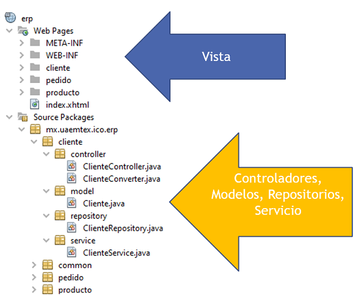

¿Cómo seleccionar la arquítectura adecuada para crear una aplicación?
En búsqueda de la respuesta
Despúes de haber participado en varios proyectos
Despúes de utilizar diferentes tecnologías
Despúes de colaborar con programadores más experimentados
Un consultor Ultra Senior me dió la respuesta:
¡DEPENDE!
Cada proyecto es diferente
La necesidad del cliente, la visión a futuro tiene mucho que ver
Fácil de Desarrollar
El objetivo de las herramientas de desarrollo y los IDEs actuales es respaldar el desarrollo de aplicaciones monolíticas.
Fácil de Implementar
En el caso de Java simplemente necesita implementar el archivo WAR.
Fácil de Escalar
Se puede escalar la aplicación ejecutando varias copias de la aplicación detrás de un balanceador de carga
Ejemplo de Arquitectura Monolítica
Generalmente se parte de un diseño de base de datos
Dentro del proyecto está todo
Aplicación Monolítica
Aplicación de Ejemplo
Arquitectura de Microservicios
Es un enfoque para desarrollar una sola aplicación como un conjunto de pequeños servicios, cada uno ejecutándose en su propio proceso y comunicándose con mecanismos ligeros, a menudo una API de recursos HTTP.
Martin Fowler
Microservicios: Características
Altamente mantenible y comprobable
Organizado en torno a las capacidades comerciales
Propiedad de un equipo pequeño
No es afin a una tecnología en particular
Microservicios: Producto no Proyecto
La ideología de proyecto lo hace difícil de mantener
La mentalidad de producto se vincula con las capacidades comerciales
Propiedad de un equipo pequeño
En lugar de considerar el software como un conjunto de funciones por completar, existe una relación continua en la que la pregunta es: ¿cómo puede el software ayudar a sus usuarios a mejorar la capacidad empresarial?
API de Microservicios como Producto: Twitter
API de Microservicios como Producto: Shopify

Importancia de los Microservicios
Ecosystema de
Microservicios
Jetbrains
https://www.jetbrains.com/es-es/lp/devecosystem-2020/microservices/
Microservicios: Eclipse Microprofile
Microservicios: Eclipse Microprofile Starter
Microservicios: Spring Boot Starter
Ejemplo Micro Servicio
Definir una API para Consultar Productos
Todalmente independiente de los otros módulos
Propia Base de Datos
Solo contiene el catálogo de productos
La funcionalidad se expone a través de Endpoints
Funcionalidad para Agregar, Obtener un Producto y Consultar
Microservicios: Spring Boot Starter
Microservicios: Consumir API
Referencia
- Pattern:
Monolithic Architecture
https://microservices.io/patterns/monolithic.html - .NET
Microservices Sample Reference
Application
https://github.com/dotnet-architecture/eShopOnContainers - Microservices a definition of
this new architectural term
https://martinfowler.com/articles/microservices.html - Slides de la presentación
https://tmsanchez.github.io/arqmicjavaslides/#/ - Spring In Action Fifth
Edition
https://www.manning.com/books/spring-in-action-fifth-edition
Código de programas de ejemplo
- Conferencia Arquitectura de Microservicios con Java
https://github.com/tmsanchez/conferenciaarqmicjava